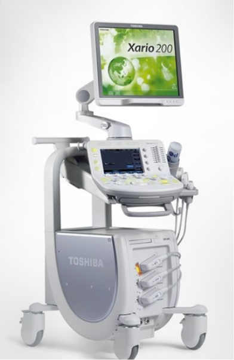
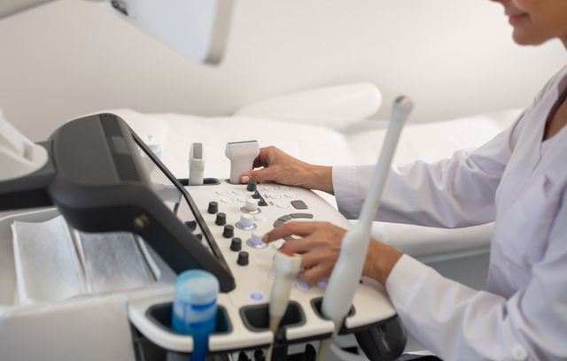

Sesonneun Orthopedic Hospital 영상의학
Sesonneun Orthopedic Hospital
초음파 검사
최신 Canon사의 장비로 최고의 실력을 갖춘 영상의학과 전문의가
환자와 대화를 하면서 편안하게 검사하실 수 있도록 도와드립니다.
초음파 검사는 인체에 무해한 초음파를 피부에 투과시키고 체내 장기에서 반사되는
초음파를 영상으로 변화시켜 심장, 혈관, 갑상선, 복부 장기의 형태를 관찰함으로서
질환의 유무를 진단하는 검사입니다.
간단히 말해서 장기 내 종양의 조기발견에 효율적인 검사입니다.
- 고감도 · 고화질의 첨단 초음파검사기기 사용
- 수검자분에게 설명하며 검사 가능
- 전기 매트 설치 : 침대에 누웠을 때 따뜻하게 체온 유지

1) 수술전 초음파 검사
- 심장초음파
- 혈관초음파
- 복부초음파
2) 건강검진 초음파 검사
- 복부초음파
- 갑상선초음파
- 복부초음파
3) 근골격계 질환 초음파 검사
- 운동선수의 전반적인 근골격질환 진단가능
- 어깨와 무릎 포함 전신의 관절질환검사
- 근육과 건의 찢어짐 검사(햄스트링, 아킬레스건 포함)
- 양성종양 검사

초음파 검사로 진단 가능한 질환
| 복부초음파 | 간 | 간암, 간경변, 간염, 지방간, 간혈관종, 간낭종, 간내석회화 등 |
|---|---|---|
| 담낭 | 담석, 담낭염, 용종, 담낭암 등 | |
| 췌장 | 췌장염, 췌장암, 췌장낭종 등 | |
| 신장 | 신장결석, 신장낭종, 신장암, 신우신염, 만성신질환 등 | |
| 비장 | 비장크기 측정, 비장종괴, 간문맥고혈압 등 | |
| 경동맥초음파 | 동맥경화, 경동맥협착, 경동맥폐쇄 등 | |
| 갑상선초음파 | 미만성갑상선질환, 결절, 낭종, 암 등 | |
| 심장초음파 | 심부전, 선천성심장질환, 심장판막질환, 심박출량 등 | |